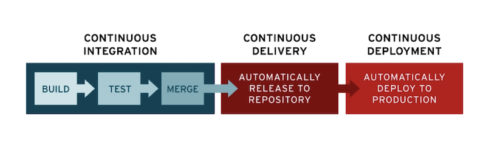

Github Actions 自动化部署（一）
这篇文章主要介绍 Github 自己的持续集成工具 Github Actions。
1. DevOps 与 CI/CD
DevOps
DevOps 这个概念最早在大学的软件过程这门课中接触，当时觉得这种面向企业的软件开发管理模式离我们甚是遥远，没有实际操作仅仅是学一堆理论导致根本不了解它的好处到底在哪，正好借这次学习 CI/CD 的机会，再重新认识一下它。
DevOps 是 Development 和 Operations 的组合，是一组过程、方法与系统的统称。
产生的原因：软件行业日益清晰地认识到为了按时交付软件产品和服务，开发(Dev)和运维(Ops)必须紧密合作，在保证软件高质量的前提下缩短系统变更从提交到部署至生产环境的时间。
主要目的：最大程度减少跨团队协作（例如开发和运维），通过自动化来加速软件变更和部署的流程，以缩短推向市场的时间。
CI/CD
CI/CD 指的是持续集成(Continuous Integration)、持续交付(Continuous Delivery)、持续部署(Continuous Deployment)。
很明显，CI/CD 就是实现 DevOps 自动化的一种方法，它贯穿软件开发的集成和测试、交付、部署阶段，由开发和运维团队以敏捷方式协同支持，其实也是 DevOps 的产物。
CI–持续集成：频繁地将通过自动化测试的代码集成(Push)到主干。集成测试的过程是完全自动化的，由专门的集成服务器进行构建，这样可以及早发现代码的问题，及早解决，避免代码堆积。
CD–持续交付：建立一个可随时将开发环境的功能部署到生产环境的代码库。持续交付可以大大缩短软件开发周期，能够保证软件在任何时候都能可靠地发布出去。
CD–持续部署：自动地将软件部署到生产环境，使得开发人员对软件功能的修改可以及时生效，大大提高了运维人员的部署效率。
CI/CD就是一整个自动化的流程，也叫管道(Pipeline)，用于实现应用开发中的高度持续自动化和持续监控。

2. Github Actions
Github Actions 是 Github 开发的 CI/CD 平台，在 2018 年推出，2019 年 11 月对所有用户全面开放。
上面提到 CI/CD 自动化流程由很多操作组成，这些操作就是 Actions，而 Github Actions 有自己完整的一套术语：
workflow：一个完整的工作流程，包含多个任务(jobs)。
job：任务，jobs 包含一个或多个 job，每个 job 由一系列的步骤(steps)组成。
step：步骤，每个步骤可以执行一个或多个动作(action)。
action：每个 action 就是最基本的动作单元。
Github Actions 的整个流程由很多个基本动作 action 组成，每个 action 都是一个脚本，Github 提供了一个action 商店，里面有各种各样的 action。很多动作可以直接通过
actions/action_name的方式直接引用它而不必自己编写，大大节省了时间。比如安装 Node.js 就可以直接通过actions/setup-node实现。Github 提供了 Linux、Windows 和 macOS 环境来运行整个 CI/CD 流程，普通用户每个月可以享受 500MB 的免费存储以及 2000 分钟数的运行时间，但是存储空间使用量不会重置，且在 GitHub 主机的 Windows 和 macOS 运行器上运行的作业，其消耗分钟数是在 Linux 运行器上运行的作业的 2 倍和 10 倍。例如，1000 分钟的 Windows 使用时间将占用帐户中包含的 2000 分钟，1000 分钟的 macOS 使用时间将占用帐户中包含的 10000 分钟。
Github Actions 的配置文件称为 workflow 文件，存放在仓库的
.github/workflows目录，采用之前提到过的yaml格式编写，它的一些基本字段如下：name：workflow 的名称，默认为当前 workflow 配置文件名。
1
name: Github Actions
on：指定触发 workflow 的条件，通常是某些事件，例如当 push 代码到仓库时触发该自动化：
1
on: push
也可以指定仓库的具体分支，例如 push 代码到仓库的 main 分支时才会触发：
1
2
3
4on:
push:
branches:
- mainjobs：表示要执行的一项或多项任务。如无特殊指定，job 之间是并发执行的，可以通过 needs 控制它们的执行顺序：
1
2
3
4
5
6
7
8
9jobs:
job1:
···
job2:
needs: job1
job3:
needs: [job1, job2]上面定义的任务执行顺序为
job1 --> job2 --> job3。job –> runs-on：指定任务运行的虚拟机环境，目前可用的虚拟机环境如下：
ubuntu-latest，ubuntu-18.04或ubuntu-16.04
windows-latest，windows-2019或windows-2016
macOS-latest或macOS-10.14
通常 Github 会提供 2 核处理器、7 GB内存和 14 GB固态硬盘的 runner。
env：可以给任务(jobs)或步骤(steps)配置环境变量。
1
2
3
4env:
name: "gyn"
run: |
echo $namesteps：指定每个 job 的运行步骤，每个 job 包含多个 step，从上到下依次执行。每个 step 包含以下字段：
name：步骤的名称。
env：该步骤所需的环境变量。
id：每个步骤的标识符。
uses：步骤使用的 action。
with：指定 action 所需参数。例如安装 Node.js：
1
2
3
4- name: Setup Node
uses: actions/setup-node@v1
with:
node-version: [16.x]run：具体执行哪些指令。
continue-on-error：设置为 true 时当此步骤失败仍允许 job 通过。
timeout-minutes：设置 step 的超时时间。